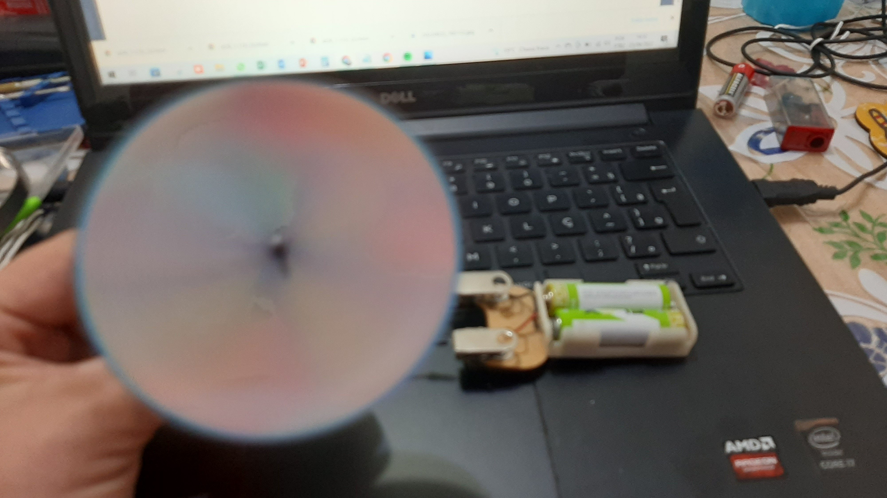

ainda não haviam percebido que também tinham uma habilidade: eles brilhavam. Mas como ainda não conheciam as outras peças, se sentiam inúteis... Continua...
ainda não haviam percebido que também tinham uma habilidade: eles brilhavam. Mas como ainda não conheciam as outras peças, se sentiam inúteis... Continua...Iniciamos o curso de Cyberpedagogia em Maio de 2022 com muitas expectativas de conhecer do zero todo o funcionamento e conseguir aplicar o conhecimento com os alunos ainda este ano. Nos deparamos com algumas dificuldades tecnológicas, porém, por enquanto, nada que nos desanime e nos faça desistir de nosso objetivo. A seguir, o início de nosso projeto:
CONHEÇA O BLOG DA NOSSA ESCOLA: BLOG EMEB PROFESSOR NILO CAMPOS GOMES
Escolhemos o ícone abaixo. A borboleta representa a metamorfose, a transformação e constante evolução, além de espalhar coisas boas por onde passa. Esse é o nosso desejo como professoras formadoras de mentes.
No início do ano nos foi ofertado um curso com um nome bonito e interessante que despertou a nossa curiosidade, além de ser uma oportunidade maravilhosa para aprender coisas novas que podem melhorar a qualidade de aprendizagem dos nossos alunos.
O pontapé inicial para realizarmos esse curso foi justamente uma das habilidades que o professor da geração Z precisa ter: adaptar-se ao uso das tecnologias. Essa habilidade nos permite estar sempre abertas a novos conteúdos e tecnologias, a adaptação a novos caminhos com um único objetivo que é dar o melhor aos nossos educandos.
Em consequência de sermos adaptáveis, acabamos por utilizar fundamentos pedagógicos diversificados dependendo do momento, da turma e do conteúdo. Cada educando aprende de forma diferente do outro, é preciso estar atento a uma escuta verdadeira das necessidades de cada um para podermos usar estratégias diferentes.
Durante as aulas, a contextualização desperta no aluno a curiosidade e a vontade de aprender. Assim, pode-se traçar uma meta, um objetivo a ser atingido, em consequência um projeto, planejamento, construção, processo, colaboração e trabalho em equipe, compartilhamento entre pares e por fim o produto final. Quando o professor mediador vai em direção aos interesses do aluno, aproveitando para ensinar algum conteúdo, podemos dizer que o aluno está sendo o autor de sua própria aprendizagem, devido às suas escolhas
Ao ouvir o que o aluno precisa, e esse ouvir não precisa ser literal, ou seja, a percepção nas atitudes também diz muito, conseguimos detectar o que o aluno precisa e assim despertar o interesse de acordo com as afinidades de cada um, sendo assim, o aluno se torna o protagonista, garantindo que através de uma conexão entre suas habilidades e o conteúdo, a aprendizagem aconteça de forma significativa. Ampliando para a turma, podemos imaginar quão grande será a troca de informações entre pares e a cooperação que cada um poderá fazer para enriquecer a aprendizagem do outro, transcendendo para um aprendizado para a vida. O professor mediador tem a oportunidade de “linkar”, fazer a ligação dessas aprendizagens dando feedbacks dos objetivos atingidos e dos que ainda estão por atingir, levando o aluno ao rumo certo que se deve seguir.
Podemos concluir que, um aluno que “apreendeu” um conteúdo, sente a sensação de competência, de dever cumprido e logo podemos ver no brilho de seus olhos que estamos fazendo um aluno feliz.
São muitas as nossas dificuldades na área da tecnologia, numa era onde as crianças já nascem “passando o dedo na tela”, mas não podemos desistir de estar sempre caminhando ao lado deles para poder mediar e levá-los ao aprendizado.
Em um mundo tecnológico, existem diversos seres, chamados de peças, assim como o nosso mundo. Nele, cada um tem uma função, mas com uma condição: só conseguem construir e fazer algo funcionar juntos, sozinhos não servem para nada. Porém, não sabiam ser empáticos, se colocar no lugar do outro e por isso não se davam bem.
De um lado do mundo, havia uma peça pequena chamada RESISTOR que tinha várias faixas coloridas pintadas. Próximo dele, morava uma peça um pouco maior, o BUZZER . Ele era inglês e havia chegado de um outro lugar do mundo. Seu nome traduzido para a língua regional é CAMPAINHA. Mais a frente, morava uma família chamada FIOS . A família tinha uma habilidade de se ligar uns aos outros, mas ainda não sabiam o porquê dessa habilidade. Um pouco mais longe moravam umas PILHAS que tinham a habilidade de fornecer energia. Elas tinham tanta energia para dar que não conseguiam ficar quietas, mas não sabiam o que fazer com tanta energia. Mais abaixo, após o Monte Hardware, morava uma família com uma aparência bem chamativa: todos eram cabeçudos e de cores diferentes. A família dos LEDS ainda não haviam percebido que também tinham uma habilidade: eles brilhavam. Mas como ainda não conheciam as outras peças, se sentiam inúteis... Continua...
Aguardem os próximos capítulos. Será que os LEDS vão encontram sua missão neste mundo? Será que aparecerá alguém que mostre o que é EMPATIA e faça as peças se unirem?
Do Scratch Day de São Bernardo do Campos que teve como tema nesse ano: Ondas de Gentileza. Também, percebemos que após a pandemia e o retorno presencial das aulas, oa alunos voltaram com dificuldade em se socializar, compreender ou compartilhar. Os conflitos estão em alta, por isso, pensamos em levar esse tema.
Veja o diálogo a seguir:
DIGITADOR: OLÁ
ROBCAR: Olá! Sou o robô Andy5! Qual é seu nome?

DIGITADOR: MEU NOME É *
ROBOCAR: Muito prazer *!! Você é um sucateiro Pré-Robótico??
DIGITADOR: SOU
ROBOCAR: Nossa, que bom! Estou preso aqui no mundo virtual! Será que você poderia me ajudar a sair daqui?
SE DIGITADOR: NÃO SOU
ROBOCAR: Puxa, será que você poderia achar um para mim? Estou preso aqui no mundo virtual!
Só um sucateiro pré-robótico poderá me tirar daqui!!DIGITADOR: NÃO POSSO
ROBOCAR:Puxa, que pena... Peço para achar um sucateiro que possa me ajudar... :(
DIGITADOR: POSSO
ROBOCAR: Nossa, que bom! Para eu surgir aí basta o você fazer um corpo robótico de material reciclável!
DIGITADOR: SIM
ROBOCAR: Eu sou um robocar, meu corpo é feito de leite, minhas rodas são de tampinha de garrafa Pet.
DIGITADOR: OLHOS
ROBOCAR: Nossa, muito importante você ter falado nisso! Meus olhos são de LEDs!!
DIGITADOR: TCHAU
ROBOCAR: Obrigado amigo!! Até logo!!
---------------------------------------------
Resultado da aula de hoje:
----------------------------